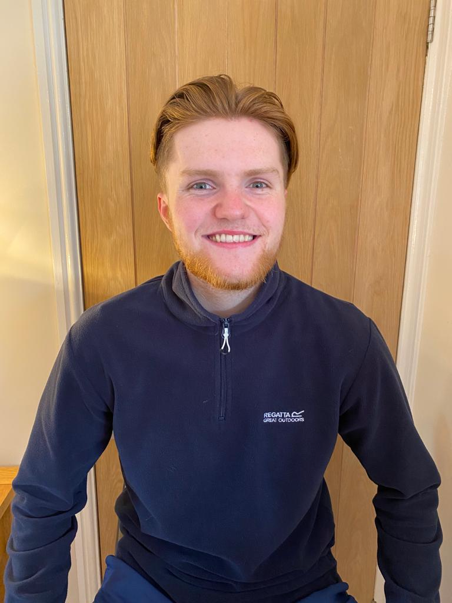

George Willoughby
Data journalist
As a data journalist, I look to find stories in numbers. This can be done through data visualisation and analysis. But, in my opinion, one of the most rewarding elements of the profession is revealing the human behind the numbers.

Hi and thank you for visiting my website 👋
My name is George Willoughby and I am a data journalist. Aside from journalism, I am a lifelong supporter of Lincoln City FC ⚽️ and follow most American sports 🏈 When I am not injured, I am a keen cricketer 🏏 and I have my moments on the oche 🎯 Here are some more interesting things about me:
🇩🇪 Learning German
🥗 Vegetarian
🥪 Extensive meal deal knowledge
🐾 Have a dog called Dexter (see right --->)